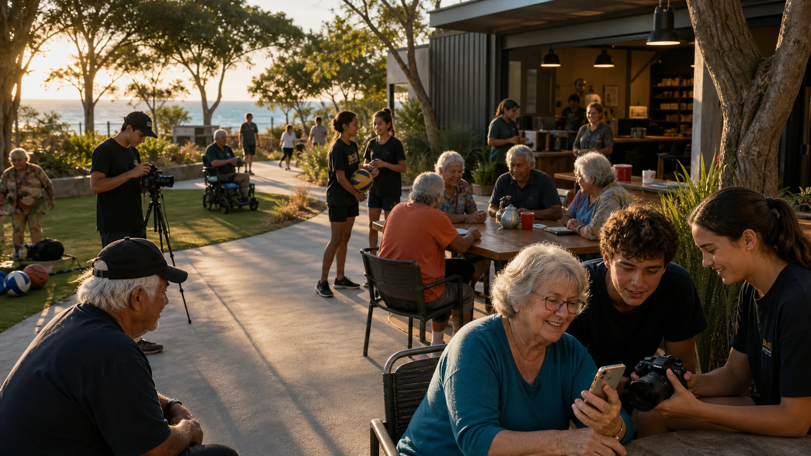

Sport crew
Court setup, gear care, referee basics, coaching support and safety checks.

Youth and older locals
Young people get jobs to practise. Older residents and Elders get shade, seats, digital confidence, social connection and a place that works at human speed.
Youth pathway
Young people can spot fake opportunity fast. The hub works better when the jobs are practical, supervised, paid or creditable, and connected to something bigger than one event.
Court setup, gear care, referee basics, coaching support and safety checks.
Stall setup, QR notices, visitor directions, pack-down and simple customer support.
Camera, sound, interviews, editing, clearances and public notice clips.
Phone help, scam awareness, forms, device setup and patient digital support.
Older residents
The island has many older residents, semi-retirees and Elders. A serious hub builds in seats, shade, toilets, readable signs, low-glare lighting, safe walking surfaces, quieter hours and help that never talks down to people.
Wellbeing lane
The hub can support movement, social connection, food, recovery, support groups and referral-friendly programs. It stays strongest when health claims are practical and private details stay private.